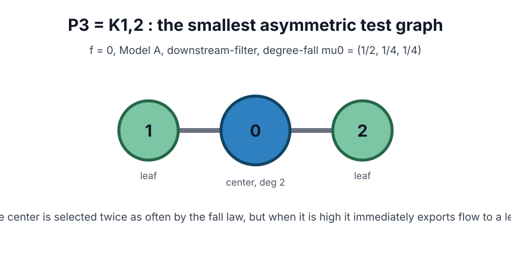
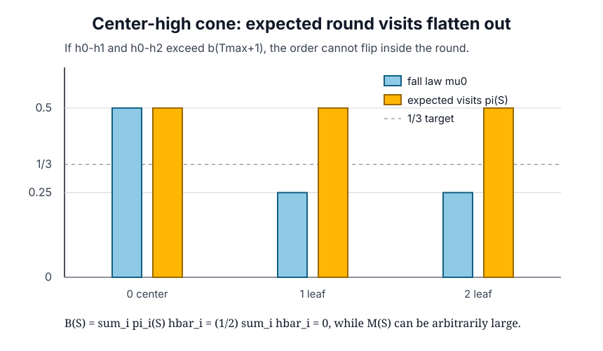
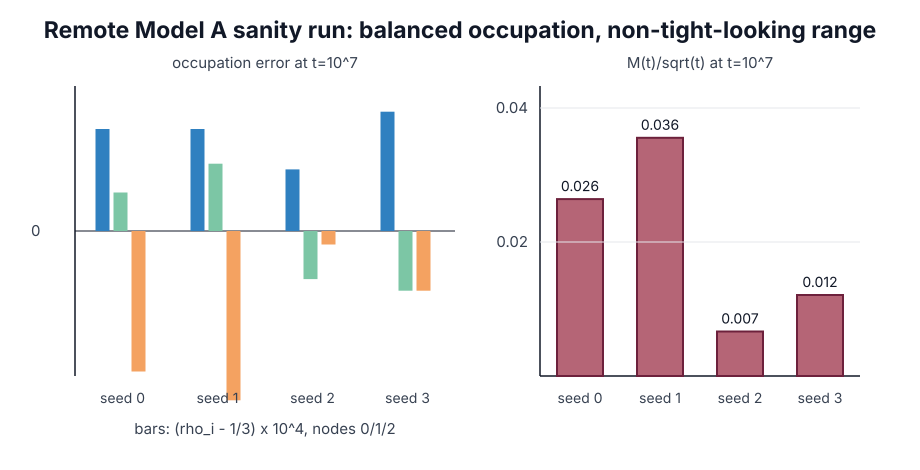
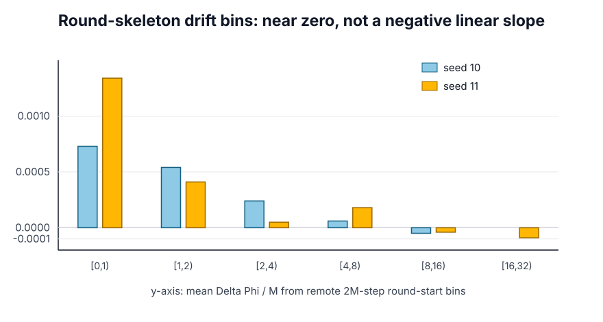

연구 ▷ HST ▷ P3에서 balanced와 Foster drift가 갈라지는 지점
이번 노트는 balanced regime 과 Foster assumption 의 차이를 P3 = K_{1,2} 에서 다시 정리한 것이다. 앞선 접근에서 잘못 잡았던 지점은 두 가지였다. 첫째, 방문분포가 균등하지 않은 그래프를 들고 오면 balanced 반례가 아니라 balanced 실패 예시가 된다. 둘째, 임의로 만든 한 round 상태만 보고 끝내면 f=0 에서 실제로 그 상태가 장기 동역학 안에서 의미 있게 나타나는지 설명하지 못한다.
그래서 이번에는 목표를 이렇게 고정한다.
- 시작은 반드시 \(f \equiv 0\).
- Model A, 즉 매 step 마다 \(b'_s \sim \operatorname{Unif}(0,b)\) 를 새로 뽑는다.
- 알고리즘은 최신 정본인 downstream-filter 이다.
- 봐야 할 것은 \(\rho=(1/3,1/3,1/3)\) 에 가까운 balanced occupation 과, 동시에
\[ B(S_R) \leq -\varepsilon_B M(S_R)+C_B \qquad(\varepsilon_B>0) \]
형태의 Foster drift 가 실제로 보장되는지다.

정확히 잡히는 local obstruction
먼저 pointwise Foster 조건이 왜 P3에서 위험한지 정확히 보자. 노드는 중심 \(0\) 과 leaf \(1,2\) 로 두고, fall law 는 degree-proportional 로 둔다.
\[ \mu_0 = (1/2,1/4,1/4). \]
중심이 leaf 둘보다 충분히 높다고 하자.
\[ h_0-h_1>b(T_{\max}+1), \qquad h_0-h_2>b(T_{\max}+1). \]
이 gap 조건이 있으면 한 round 안에서 높이 순서가 뒤집히지 않는다. downstream-filter 는 다음처럼 작동한다.
- center 에서 시작하면, 낮은 leaf 둘 중 하나로 한 번 flow 한 뒤 block 된다.
- leaf 에서 시작하면, neighbor 인 center 가 더 높으므로 바로 block 된다.
따라서 round 안 expected visit count 는 fall law 와 달라진다.

계산하면
\[ \pi(S) = \left({1\over 2},{1\over 2},{1\over 2}\right). \]
그래서 centered height 를 \(\bar h_i=h_i-\frac13\sum_j h_j\) 라고 쓰면,
\[ \begin{aligned} B(S) &= \sum_i \pi_i(S)\bar h_i \\ &= {1\over2}\sum_i \bar h_i \\ &= 0. \end{aligned} \]
반면 \(M(S)=\max_i|\bar h_i|\) 는 이 cone 안에서 얼마든지 크게 만들 수 있다. 예를 들어
\[ \bar h = (R,-R/2,-R/2) \]
라고 두면 \(M(S)=R\) 이지만 \(B(S)=0\) 이다. 그러므로 Foster 조건을 모든 큰 상태 \(S\) 에 대해 pointwise 로 요구한다면, P3의 center-high cone 은 이미
\[ 0 \leq -\varepsilon_B R + C_B \]
를 arbitrarily large \(R\) 에서 강제하므로 불가능하다.
여기까지는 정확계산이다. 다만 이 문장만으로 “f=0 동역학의 최종 반례”라고 박으면 안 된다. 대표님 지적대로 Theorem A 쪽에서 중요한 것은 한 round 장난감이 아니라, 실제 f=0 process 가 장기적으로 어떤 occupation 과 height range 를 만드는가다.
f=0에서 본 balanced 쪽
f=0, Model A, downstream-filter, \(T_{\max}=20\), \(b=0.05\) 로 원격 sanity run 을 돌렸다. 여기서 fall law 자체는 \((1/2,1/4,1/4)\) 로 균등하지 않지만, flow 가 center 쪽 눈을 leaf 로 밀어내기 때문에 장기 occupation 은 균등 쪽으로 붙는다.

\(t=10^7\) 에서 seed 0–3의 occupation 은 다음 수준이다.
| seed | \(\rho_0\) | \(\rho_1\) | \(\rho_2\) | \(M(t)\) |
|---|---|---|---|---|
| 0 | 0.33351 | 0.33340 | 0.33309 | 83.511 |
| 1 | 0.33351 | 0.33345 | 0.33304 | 112.412 |
| 2 | 0.33344 | 0.33325 | 0.33331 | 21.013 |
| 3 | 0.33354 | 0.33323 | 0.33323 | 38.224 |
이 결과는 “star 나 \(C_{60}\)+pendant 를 balanced 반례라고 부르는” 식의 문제와 다르다. 그쪽은 애초에 장기 방문률이 노드별로 달라지는 방향이라 balanced 조건 자체가 깨진다. P3는 작은 그래프인데도 occupation 은 균등으로 붙고, 동시에 center-high cone 에서는 Foster 의 음의 linear term 이 사라지는 구조가 보인다.
Foster drift 쪽은 어떻게 보이나
Foster 조건의 핵심은 큰 \(M\) 영역에서 drift proxy 가 음의 linear slope 를 가져야 한다는 점이다.
\[ B(S) \lesssim -\varepsilon_B M(S) \quad\text{for large }M(S). \]
원격 round-skeleton binning 에서도 큰 \(M\) bin 의 평균 drift 는 강한 음의 slope 로 보이지 않았다. 아래 그림은 2M-step run 두 개(seed 10, 11)에서 round 시작점의 \(M\) bin 별 평균 \(\Delta\Phi/M\) 을 그린 것이다.

큰 bin 에서 값은 0 근방에 붙어 있고, 적어도 이 scale 에서는 \(-\varepsilon M\) 꼴의 복원 slope 가 관측되지 않는다.
| seed | \(M\) bin | mean \(M\) | mean \(\Delta\Phi/M\) |
|---|---|---|---|
| 10 | \([4,8)\) | 6.073 | \(+0.00006\) |
| 10 | \([8,16)\) | 10.381 | \(-0.00005\) |
| 11 | \([4,8)\) | 6.565 | \(+0.00018\) |
| 11 | \([8,16)\) | 10.957 | \(-0.00004\) |
| 11 | \([16,32)\) | 17.182 | \(-0.00009\) |
이것은 완전한 증명이 아니라 drift profile 의 방향 확인이다. 하지만 방향은 분명하다. balanced occupation 은 보이는데, 큰 imbalance 를 선형으로 끌어내리는 Foster 복원력은 보이지 않는다.
현재 결론
P3에서 정확히 말할 수 있는 것은 다음이다.
첫째, pointwise Foster inequality 를 모든 큰 상태에 대해 요구하면 P3의 center-high cone 이 깨뜨린다. 그 cone 에서는 \(\pi(S)=(1/2,1/2,1/2)\) 이고 \(B(S)=0\) 이며, \(M(S)\) 만 arbitrarily large 로 보낼 수 있다.
둘째, f=0 Model A 원격 sanity run 에서는 occupation 이 \(\rho=(1/3,1/3,1/3)\) 로 붙는다. 즉 이 예시는 star 류처럼 balanced 자체가 실패해서 탈락하는 케이스가 아니다.
셋째, 아직 남은 증명 과제는 f=0 chain 이 이 local obstruction 을 장기적으로 얼마나 자주, 얼마나 크게 방문하는지 formalize 하는 것이다. 이를 보이면 “balanced 이지만 Foster assumption 은 필요하다”는 반례로 닫힌다. 반대로 누군가 P3에서 pathwise/tight bound 를 증명한다면, 이 후보는 final counterexample 이 아니라 pointwise Foster 조건의 과강함을 보여 주는 예시로 내려간다.
따라서 현재 가장 정직한 상태는 이렇다.
P3는 balanced occupation 과 Foster drift 를 분리하는 가장 작은 후보이며, pointwise Foster 조건은 정확계산으로 이미 center-high cone 에서 막힌다.
f=0기준 최종 반례로 쓰려면, 장기 chain 이 그 obstruction 을 실제로 unbounded scale 에서 밟는다는 마지막 확률론 조각을 더 증명해야 한다.
이제 다음 작업은 반례를 더 키우는 것이 아니라, P3에서 \(Y_t=h_0(t)-\frac12(h_1(t)+h_2(t))\) 같은 1차 projection 을 잡아 center-high cone 의 exit/return 구조를 martingale 또는 renewal argument 로 닫는 것이다. 여기까지 닫히면 Assumption 제거 불가 쪽이 훨씬 깨끗해진다.